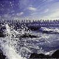

Celtic Lyrics Corner > Artists & Groups > Calum Alex MacMillan > Tàladh Nan Cuantan > Eilean Fraoich
|  | Eilean Fraoich |
| Credits : | William MacKenzie; arranged by Allan Henderson & Calum Alex MacMillan |
| Appears On : | Tàladh Nan Cuantan |
| Language : | Gàidhlig (Scottish Gaelic) |
| Other Versions : | " Eilean Fraoich Nam Beann Àrd " on Mackenzie's album Fama Clamosa |
| Lyrics : | English Translation : |
| Eilean fraoich, eilean fraoich | Heather isle, heather isle |
| Eilean fraoich nam beann àrd | Heather isle of the high mountains |
| Far an d' fhuair mi m' àrach òg | Where I was brought up |
| Eilean Leòdhais mo ghràidh | My beloved Isle of Lewis |
| Far an robh mi 'n làithean m' òig | Where I used to run barefoot |
| Ruith gun bhròig do an tràigh | To the shore as a child |
| 'S mi ri streup gu nead an eòin | Climbing to the birds' nests in every crevice |
| Anns gach còs san biodh àl | Where there might be a brood of nestlings |
| Thug mi greis an làithean m' òig | I spent some time in my young days |
| Air a' mhòintich nam phàisd' | Out on the moor herding |
| 'S mi ri tional nan laogh òg | The young calves and the cows |
| Is nam bò aig an tràth | At their milking time |
| Far am faca mi an òigh | Where as a young man I saw the maid |
| Thuit mi òg anns a' ghràdh | With whom I fell in love |
| 'S ann a chionn nach 'eil i beò | It is because she is no longer alive |
| Tha mi seòladh air sàl | That I am sailing overseas |
| 'S ged a tha i 'n Cladh na h-Aoidh | And though she is at rest in the graveyard of Eye |
| Far nach cluinn i mo dhàn | Where she cannot hear my song |
| Chan eil madainn 's chan eil oidhch' | No morning or night |
| Nach bi cuimhn' air a ghràdh | Passes without my remembering her love |
| 'S e gun chaill mi bean mo ghaoil | It is because I lost my beloved wife |
| Dh'fhàg mo shaothair aig càch | That others have taken on my labor |
| 'S e dh'fhàg Uilleam leis a' chloinn | And left William with the children |
| An taobh thall de an t-sàl | On the far side of the ocean |
| 'S ged a bheirte dhomh an tìr | And although I might be given the land |
| Eadar chraobhan is bhàrr | With trees and crops as well |
| B'fhearr leam a bhi measg an fhraoich | I would prefer to be among the heather |
| Ann an Tir nam Beann Ard | In the Land of the High Mountains |
| Eilean fraoich, eilean fraoich | Heather isle, heather isle |
| Eilean fraoich nam beann àrd | Heather isle of the high mountains |
| Far an d' fhuair mi m' àrach òg | Where I was brought up |
| Eilean Leòdhais mo ghràidh | My beloved Isle of Lewis |